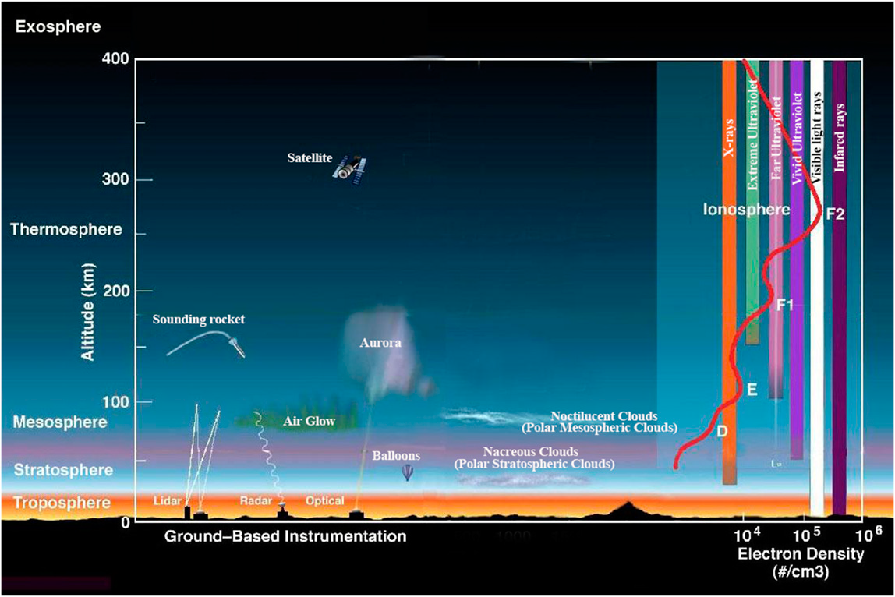
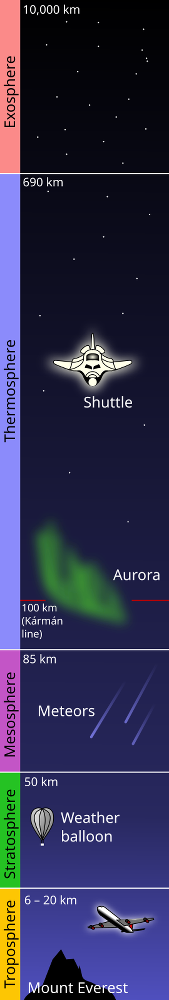
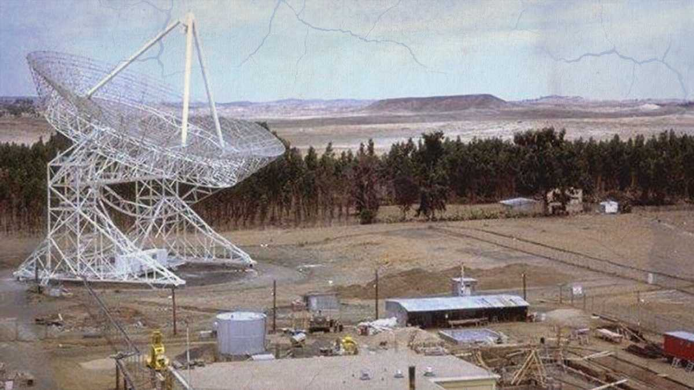
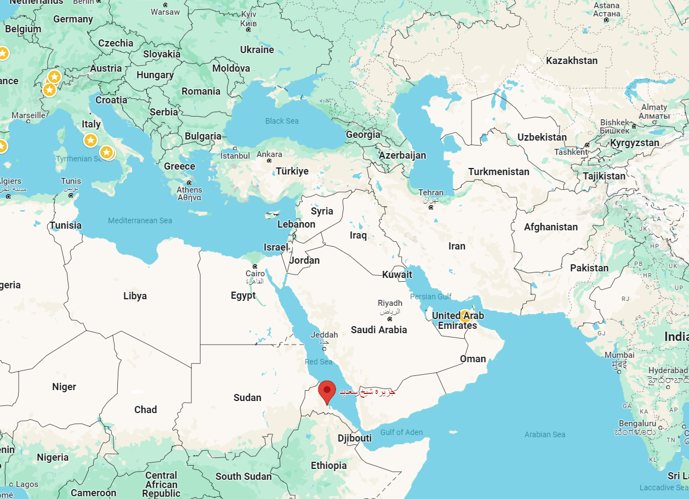
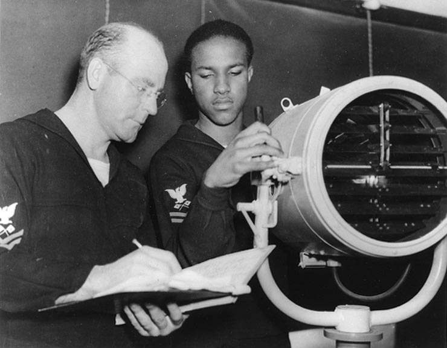
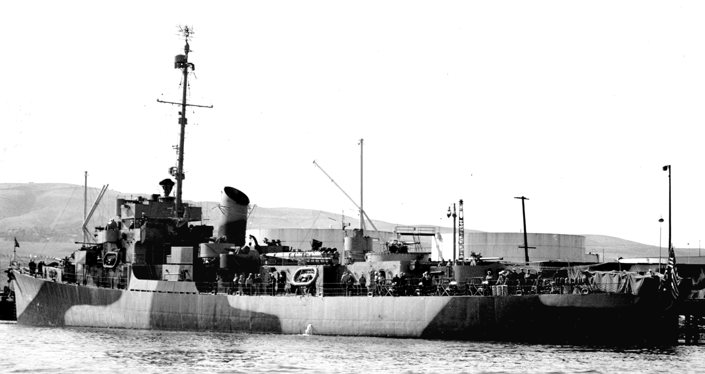
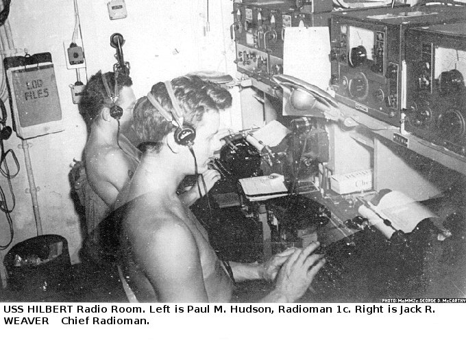
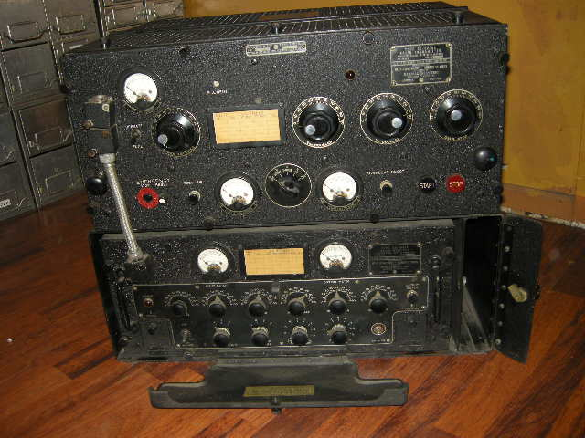
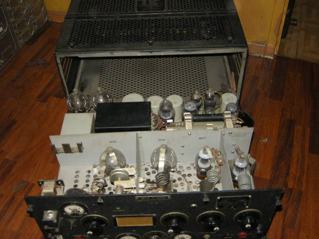

WW2의 수정 이야기 (1) - 할시 제독의 불평
게시: 2024-09-26T06:30:29+09:00
<장비 탓을 하는 제독> 전에 언급한 ( https://nasica1.tistory.com/802 참조), 1943년 1월 말의 렌넬 섬(Rennel Island) 해전에서 순양함 USS Chicago (CA-29)가 무선침묵 깨는 것을 두려워한 나머지 항공 엄호 없이 일본해군 뇌격기들과 싸우다 격침된 사건에 대해 할시(Halsey) 제독은 보고서에 아래와 같이 무전기 탓을 함. "실전 경험에 기반하여, 초고주파수 다채널 신속 변환 무선통신 장비 (ultra high frequency and multi channel, quick shift radio equipment)의 생산이 1년 넘게 계속 권고되었다. 그러나 실전부대들은 아직도 불만족스러운 장비들 때문에 고통받고 있다." 무선침묵과 저 초고주파수 다채널 신속 변환 무선통신 장비와는 무슨 상관이 있길래 저런 불평을 늘어놓았을까? 저런 장비가 있으면 무선침묵을 지키지 않아도 되나? 할시의 보고서를 보면 저 신형 무선통신 장비의 생산이 1년 넘게 지연되고 있다는 모양인데, 그렇다면 이미 기술 개발은 끝났다는 뜻. 하긴 그러니까 전선 지휘관인 할시 제독도 저 장비에 대해서 이야기했겠지. 기술과 공업 생산력에 있어 당시 세계 최고였던 미국이 개발을 해놓고도 왜 대량 생산에는 못 들어가고 있었을까? 무선침묵을 지키는 이유는 적의 도청을 피하기 위한 것도 있지만 지난 편에서 독일 U-boat와 Huff-Duff 장비의 숨바꼭질에서 설명했듯이 발신 위치를 숨기기 위해서임. 그런데 이 모든 것은 전파가 주책 맞게도 원하는 것보다 훨씬 더 멀리 날아가기 때문에 발생하는 일. 전파 강도가 너무 센 것이 문제라면 가까운 거리까지만 날아가도록 무전기 전력을 줄이면 안 되었을까? 안 됨. 빛도 일종의 전자기파이지만, 빛처럼 전파도 단지 약하다고 해서 멀리 못 가는 것이 아님. 미약하더라도 수평선 너머, 심지어 지구 반대편에서도 감지가 되기도 함. 이유는 하늘의 전리층에 반사되었다가 다시 대지나 해면에 반사되어 퍼지는 skywave, 또 지구 곡면을 따라 휘어져 퍼져나가는 groundwave 때문. 이걸 막을 방법이 없을까?

(전리층, 즉 ionoshpere라는 것은 지구 대기권의 얇은 막 같은 것이 아니라 지상에서 48km ~ 965km에 걸쳐진 두터운 구간으로서, 대류권(troposhere) 위쪽 성층권보다도 위쪽에서 외기권(exosphere)까지 걸친 구간. 전리층에는 태양광에 의해 이온화된 전자들이 풍부하기 때문에 여기에 전파가 금속판에 부딪힌 것처럼 반사되는 것. 무선침묵을 지키는 측면에서는 성가신 존재이지만 전리층 덕분에 우리가 우주에서 날아오는 극자외선과 X-ray 등으로부터 살아남을 수 있는 것.)

(고딩때 지구과학 시간에 배우는 내용이지만 다시 한번... 전리층은 성층권 위쪽임.)

(이 사진은 아프리카 북동부 에리트레아(Eritrea)에 있는 미군 통신기지 Kagnew Station의 1970년대 모습. 원래 WW2 당시 이탈리아군의 기지를 미군이 접수한 이후 에리트레아와 협정을 맺고 미국이 계속 사용했는데, 겉으로는 미군의 무선 중계기를 설치한 것으로 위장했지만, 실제로는 여기가 냉전시대 남부 러시아의 무전을 감청하는 기지였다고. 이 모든 것이 전리층 덕분.

(캑뉴 기지의 위치. 서독이나 이탈리아 같은 유럽에서 감청하지 않고 아프리카에서 감청하는 것이 뜻밖이라고 생각될 수 있는데, 일단 사방에 전파 방해가 될 만한 전자기 시설이 없고, 건물이나 산 등으로 가로막히지 않은 지형에, 주변 민간인들로부터의 보안이 확실하고, 또 당시 소련의 우주 시설이 있던 크림 반도와 비슷한 경도에 위치해 있었기 때문에 저 위치에서의 감청이 중요했던 것.) 있음. 무선통신에 이용되는 주파수 중 전리층에 반사되는 것은 대략 2 MHz-20 MHz 구간. 그러니까 대충 3-30 MHz 구간인 HF (High Frequency) 대역을 피하면 됨. 그런데 하필 WW2 당시 사용되던 대부분의 무선통신 장비들이 바로 이 HF 대역을 쓰던 것들. 공교롭게도 왜 하필 그 구간을 썼을까도 싶지만 실은 무선침묵을 생각하지 않는다면 전리층의 반사를 이용할 수 있어야 멀리까지 통신이 되므로 일부러 HF 대역을 썼던 것임. 반대로 그 이하의 주파수, 즉 3 MHz 이하의 LF, MF 등은 지구 곡면을 따라 휘어 흐르는 성질이 있으므로 역시 무선침묵에는 좋지 않음. 그러나 30 MHz 이상, 즉 VHF (Very Hight Frequency, 30 ~ 300 MHz 구간) 대역을 이용한다면 되는 거 아닌가? 실제로 가능했음. 이 VHF를 이용하면 무선통신 전파는 딱 눈에 보이는 구간(line-of-sight, 당시 전함의 안테나 높이 등을 생각할 때 실질적으로는 약 40km)까지만 날아갔고, 수평선 저 너머에 존재하는 일본해군 함대에게는 전달되지 않았음. 미해군은 당시 이 사실을 당연히 알고 있었음. 그런데 왜 VHF를 이용한 무선통신 장비를 쓰지 않았을까? <Talk Between Ships> 원래 전통적으로 해군은 깃발 신호 또는 점등 신호로 배와 배끼리 통신을 했음. 넬슨 제독이 트라팔가 해전에서 프랑스 해군을 때려부수던 시절에는 배도 속력이 느리고 대포의 사거리도 짧았으므로 그렇게 느릿느릿한 깃발 신호나 점등 신호로도 의사 전달이 충분히 가능했으나, 중유 보일러를 때면서 속도가 20노트 이상으로 빨라지고 또 주포 사거리가 수평선 너머까지로 연장되자, 그런 느린 통신 수단으로는 급박한 정보 전달이 불충분해짐.

(WW2 당시 점멸식 신호등 훈련을 받는 모습. 저런 점멸식 신호등도 결국은 모르스 부호를 쏘는 것이고, 아무래도 무선통신 타전기보다는 더 큰 물건이다보니 타전기보다는 약간 더 느려서 최대 전송 속도가 분당 14 단어 정도였다고.) WW1 당시엔 이미 무선통신이 가능해졌으나, 그래도 실전에서는 여전히 함장들이 함대 내에서의 정보 전달이 너무 느려서 아무 쓸모가 없다고 불평하는 일이 많아짐. 이유는 전함 A에 탄 제독이 순양함 B의 함장에게 메시지를 보낼 때 거쳐야 할 것들이 너무 많았기 떄문. 제독이 직접 무전기 앞에 앉아 모르스 부호를 타전할 수는 없으니, 부관에게 명령을 전달하면, 부관은 그걸 종이에 써서 무전실로 뛰어감. 무전실에는 암호 장교가 앉아있다가 그걸 암호화하여 무전병에게 넘겨줌. 무전병이 분당 15 단어 수준으로 타전하면 순양함 B에서는 여태까지 벌어졌던 중간 과정을 역순으로 그대로 거쳐 순양함 B의 함장이 받게 되는 것.

(호위구축함 USS Hilbert (DE-742, 1600톤, 21노트)의 모습)

(그 USS Hilbert (DE-742)의 무전실 모습. 헐벗은 모습이 인상적.) 그러니 아무리 제독의 명령이 짧다고 해도, 그게 순양함 B에게 전달될 때까지는 적어도 3~4분이 소요되는 것. 이 정도의 시간 지연은 특히 1초가 아까운 대잠전을 수행할 때는 무전통신 자체를 아무짝에도 쓸모없게 만들었음. 그래서 미해군에서는 WW2 이전부터 군함의 함장끼리 직접 전화로 이야기를 나누듯 대화할 수 있는 음성 무전통신을 요구했음. 그러나 그건 절대 있을 수 없는 일. 이쪽 함장들 간의 작전 지시를 그렇게 암호화도 거치지 않고 무전으로 날린다면 아군의 작전을 적함대가 그대로 들을 것이 아닌가? 하지만 그 무전통신을 VHF 대역으로 수행한다면? 수평선 이내에서만 그 무전통신이 이루어지므로 수평선 너머의 적함대에게는 전달되지 않음. 그래서 이미 1938년 경부터 미해군에서는 TBS, 즉 Talk Between Ships라는 무전기로 VHF 무선통신을 이미 하고 있었음. 결과는 매우 성공적. 유일한 부작용이라고 하면 TBS를 갖춰 주니까 함교에 있는 장교들끼리 옆 군함의 장교들과 자꾸 쓸데없는 잡담을 하더라는 것.

(이건 TBS-4 모델인데, 사용 주파수 대역이 60~80 MHz.)

(내부를 열어보면 뭔가 두꺼운 코일도 보이고 진공관도 보이고 아무튼 허접하면서도 복잡해 보임.) 그러면 이걸 그냥 쓰면 되는데 대체 왜 할시 제독은 VHF 무선통신 장비가 없다고 툴툴거렸던 것일까? 그 이야기는 퀴리 부부 (노벨상 탄 그 퀴리 부부 맞음)부터 시작함. 다만 그 주인공은 와이프인 마리 퀴리가 아니라 남편 피에르 퀴리임.